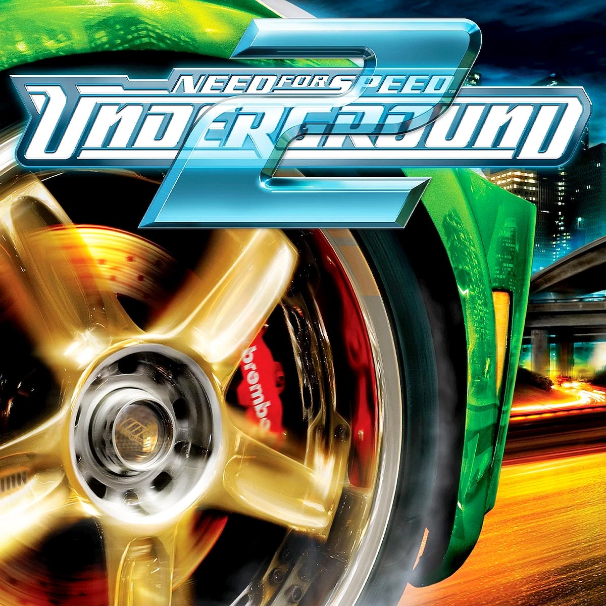

Need for speed underground 2 ou para intimos, Need underground 2, foi aquele jogo que quase todo mundo que tinha um PS2 jogou e ficava arrepiado ao som de 'Dororón' ou para os cultos: get low e o jogo foi lançado no ano de 2004 pela EA Black Box e publicado pela Electronic Arts.
O jogo conta com uma variedade consideravel de carros, carros meio bregas para os padrões atuais mas... para mim, ainda é muito irado pelo fator nostalgico além do mais, quem nunca fez um 'HUMMMM!' com a boca para imitar o motor dos carros do jogo?.
A historia do jogo é simples e começa depois do primeiro Need underground, você é um piloto de corrida (mais especificamente de racha) e você foi simplismente um dos melhores na cidade anterior, mas um sujeito chamado Caleb Reece faz o famoso ato de 'passar a perna', ele faz você sofrer um acidente de carro, que, inclusive, foi adaptado para os filmes da franquia need for speed, com a mudança de que é um Konisseg Regera que sofre o acidente.